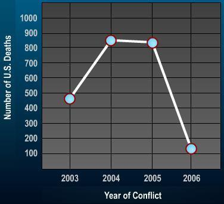
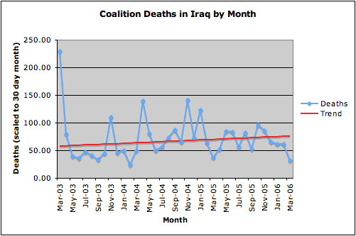

04.26.07
Separated (in space-time) at birth?
David Hilbert (1862-1943), legendary and influential mathematician:

David Hilbert, Principal Research Scientist, CSIRO Sustainable Ecosystems:
Permalink Comments off
Teaching, Training, and Advising for the Harvard Mathematics Department. Oh, and some computer stuff.
David Hilbert (1862-1943), legendary and influential mathematician:
David Hilbert, Principal Research Scientist, CSIRO Sustainable Ecosystems:
Permalink Comments off
Serena Rezny is speaking this week in the Undergraduate Mathematics Colloquium aka Math Table on laundry machines. Sounds like a fun practical math application that all undergraduates could learn from. Serena is the four-time π day recitation champion, having reached 1058 digits this most recent March 14.
Blogged with Flock
Permalink Comments off
I found this sweet Double Pendulum Physics Simulation at myphysicslab. We’re doing nonlinear systems of ODE in Math 21b tomorrow. Hopefully I can work it in!
Permalink Comments off
I’ve been traveling a lot lately and waiting in line at the airport. So I was really surprised to see an AMS poster about the mathematics of Airplane Boarding. After chasing the poster to a Wall Street Journal article, I found the home page of the guy who’s been studying it closely, and has saved airlines millions of dollars per year.
Nice job. But I want to get off the plane quicker, too!
technorati tags:mathinthenews
Permalink Comments off
There’s a piece in America Online News’s Daily Pulse called
Where are we headed? about the war in Iraq. Included is a time series of the number of soldiers lost since the war began:

Based on this representation, someone might believe that the number of coalition deaths is declining sharply now. However, this graph compares all of 2005 with the first 2.5 months, or 73 days, of 2006. I can’t tell where that giant blue dot is centered — maybe around 125 — but whatever it is, the crudest approximation requires multiplying it by 365/73 = 5 to compare the total with the total from all of 2005. That would be something like 625 deaths this year.
(Technically, too, the 2003 number should be scaled up to represent the fact that the war did not begin until March of 2003).
A month-by-month chart shows a different trend in the combat deaths:

These show a growth in the monthly death count by about 0.5 per month. It’s true that there is a decline in the last few months, but looking at earlier parts of the data show that that has happened before, only to tick back up again.
I learned about AOL’s graphic from the Center for American Progress, an organization which is critical of the current administration. But the criticism here is neither towards the president nor of the war effort, but towards AOL who published such a misleading graphic. I too am only writing here as a mathematician to criticise the mathematics of the situation. The war very well could be drawing to a close, but the four numbers depicted in the AOL graphic aren’t a reasonable indicator of it.
I got my data from icasualties.org, which combs newspaper accounts and matches them with Department of Defense releases. They count 2314 deaths since the beginning of the conflict, only six of which have not been confirmed by the DoD
Permalink Comments off
I found a nice little entry on everything2 about how to Make pages using the Symbol font display correctly in Mozilla/Firefox. Very helpful.
Permalink Comments off
There’s an interesting article in USA Today on 2006-01-12 called “Elementary teacher does her homework — lots of it“. It’s about a teacher who makes a special effort to get to know her students so she can tailor lesson plans to them.
This isn’t a lesson for K-12 teachers only. At the college level our students have even more diverse and interesting backgrounds. Especially here, where it seems that everybody is very good at something.
For a college teacher, getting to know the students breaks down the misconception that teachers and students are fundamentally different people and shouldn’t converse. That’s one reason why I recommend to teaching fellows they meet one-on-one with their students early in the term.
Permalink Comments off
Game theory is the featured article on Wikipedia today. It’s a nice read and isn’t too abstract.
Permalink Comments off
There’s an interesting article in Business Week called “Math Will Rock Your World.” It talks about a news service that maps articles into a large space and can find articles related to a specific one by comparing the text. But its major point is that math is having more and more applications to the business world.
The world is moving into a new age of numbers. Partnerships between mathematicians and computer scientists are bulling into whole new domains of business and imposing the efficiencies of math. This has happened before. In past decades, the marriage of higher math and computer modeling transformed science and engineering. Quants turned finance upside down a generation ago. And data miners plucked useful nuggets from vast consumer and business databases. But just look at where the mathematicians are now. They’re helping to map out advertising campaigns, they’re changing the nature of research in newsrooms and in biology labs, and they’re enabling marketers to forge new one-on-one relationships with customers. As this occurs, more of the economy falls into the realm of numbers. Says James R. Schatz, chief of the mathematics research group at the National Security Agency: “There has never been a better time to be a mathematician.”
Thanks to Oliver for the reference.
Permalink Comments off
Here’s the story of a guy who’s got some of his priorities straight. Farris Hassan, 16, of Ft. Lauderdale, traveled secretly to Iraq to practice what he learned in his high school about “immersion journalism.” He’s promising to talk about what he saw there, but has to catch up on his schoolwork:
“I have a big calculus test on relative rates of change that I need to study for, so I have a lot of things going on right now,” Hassan said.
Good luck on the test, Farris, and we’re looking forward to hearing about your experience.
Permalink Comments off
Copyright ©2008 The President and Fellows of Harvard College.